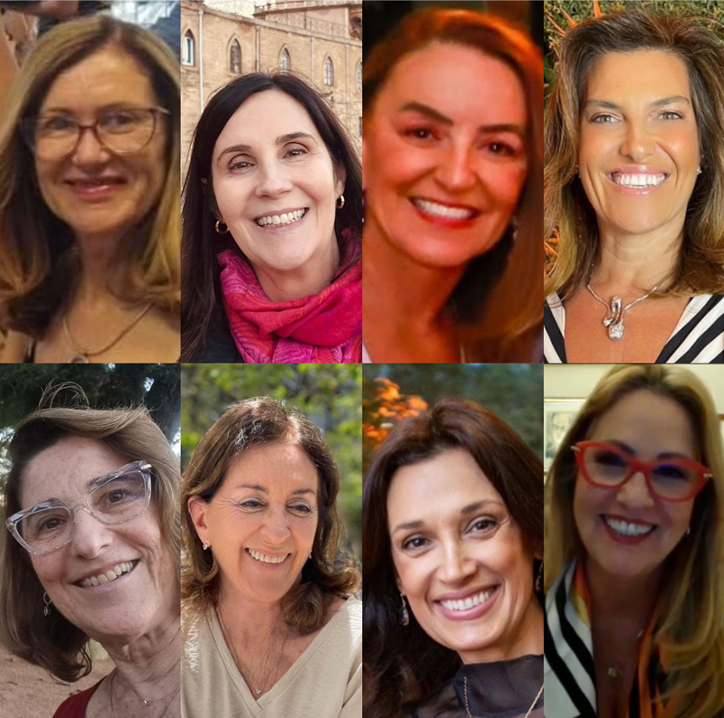

Autor
Ruggero Levy
Psicanalista, Membro Efetivo e Analista Didata da SPPA
Catástrofe e mudança catastrófica
- 
 Estamos vivendo uma oportunidade histórica de reconstrução em moldes mais sustentáveis, adaptados à nova realidade climática e tecnicamente atualizados.
Estamos vivendo uma oportunidade histórica de reconstrução em moldes mais sustentáveis, adaptados à nova realidade climática e tecnicamente atualizados.
Estamos em um carro dirigido por um motorista, mas ele subitamente dá-se conta de que está perdido. Entra em um terreno desértico de areia úmida, com alguns pequenos lagos ou poças de água preta. O carro sobe e desce por montanhas de areia cinzenta em busca da saída deste verdadeiro labirinto. Lembra aquelas imagens no deserto do Saara , em que carros especiais sobem e descem dunas gigantes de areia. A cada subida, cresce a curiosidade e a esperança de que a saída está do outro lado da montanha de areia. A diferença é que tem sol no Saara, mas aqui tudo é cinza e sombrio. Os passageiros e o motorista percebem que estão completamente desorientados, lutando para tentar retomar o caminho, encontrar a saída daquele ambiente desolador.
Este sonho retrata o que estamos vivendo. Estamos desorientados, presos em um ambiente úmido e desolador. Estamos desorientados, mas não apenas sobre quando os desabrigados/abrigados poderão voltar para suas casas, isto se ainda tiverem casa; não apenas sobre quando o Centro Histórico, com a sua charmosa Praça da Alfândega, o Margs, o Centro Cultural Santander, a Casa de Cultura do saudoso Mário Quintana e, por que não, a nossa gloriosa SPPA, emergirá da escuridão e da água lodacenta. Estes ícones imersos são metáforas da inundação e destruição que a água parada ou a sua correnteza causou em todo o estado, assim como também não sabemos quando e como essa devastação será reconstruída.
Mas, acima de tudo, estamos sem saber até quando perdurará a solidariedade e a generosidade dos milhares de voluntários e doadores que têm aportado, felizmente, milhões e milhões de reais em pouco tempo. Não sabemos se o espírito solidário e a preocupação com o outro ser humano sobreviverão ou serão sequestrados novamente pelas engrenagens impiedosas da cultura do desempenho (Han, 2017).
Podemos afirmar, com certeza, que o espírito solidário ao qual temos assistido, ao lado de toda a entrega, dedicação e cuidado de uns com os outros, são absolutamente inéditos nesta grandeza estadual e mesmo nacional, na mesma proporção do ineditismo da catástrofe climática que nos atingiu. É preciso destacar ainda o engajamento da SPPA, tanto da Diretoria quanto de muitos de seus membros e candidatos, na atenção à população necessitada, seja pela presença e até pelos atendimentos em várias frentes, algumas bastante difíceis. Ficou evidente o quanto temos a contribuir, adaptando o nosso conhecimento, expertise e formação para trabalhar em situações de alta densidade emocional. Desta maneira, podemos estender a contribuição da psicanálise e dos psicanalistas para além das quatro paredes dos consultórios.
Esta mobilização solidária superou a tendência à “grenalização” tão típica do Rio Grande do Sul. O espírito combativo e guerreiro da nossa cultura tem as suas raízes nos conflitos históricos, inicialmente entre Chimangos e Pica-paus e depois entre Chimangos e Maragatos, entre federalistas e republicanos, entre os de lenço vermelho e os de lenço branco. Então, se por um lado este espírito forjou um povo lutador e resiliente, de outro frequentemente dividiu o nosso estado em lutas fratricidas, chegando muitas vezes às raias do funcionamento polarizado e esquizoparanóide. Os adversários ou rivais passaram a ser vistos como inimigos que devem ser destruídos, haja vista a violência, por exemplo, nos estádios de futebol. É claro que, nesta tendência à polarização e ao fanatismo, existem outros fatores determinantes que extrapolam o âmbito regional, mas o nosso estado notabiliza-se por tal tipo de funcionamento.
Por tudo isso, apesar da dor, dos prejuízos, dos sofrimentos e do trabalho incomensurável que teremos pela frente, acredito que estamos vivendo uma oportunidade histórica de reconstruir o estado em moldes mais sustentáveis, adaptados à nova realidade climática e tecnicamente atualizados. Mais do que isso – e talvez mais relevante – é o fato de termos uma oportunidade histórica de mudar o espírito dominante em nossa cultura, no sentido de que, mesmo pensando diferente ou possuindo cores diferentes, tanto de pele quanto de lenços e de camisetas, somos cidadãos gaúchos, e o crescimento de um favorecerá o crescimento do outro. Somos responsáveis uns pelos outros, precisando atenuar o funcionamento esquizoparanóide. Trata-se de um movimento reparatório no sentido amplo do termo: reparatório em relação ao dano que estamos provocando na natureza e reparatório ao outro ser humano que tem sido tratado com descaso e indiferença, quando não com violência.
Oxalá a catástrofe gere uma mudança catastrófica no sentido falado por Bion, isto é, que toda a turbulência que estamos vivendo nos leve a um crescimento em nosso funcionamento, que a estrutura do pensar se modifique. Vamos esperar que essa tragédia climática seja a saída do ambiente úmido e desolador em que estamos vivendo.